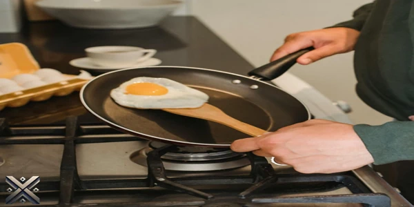
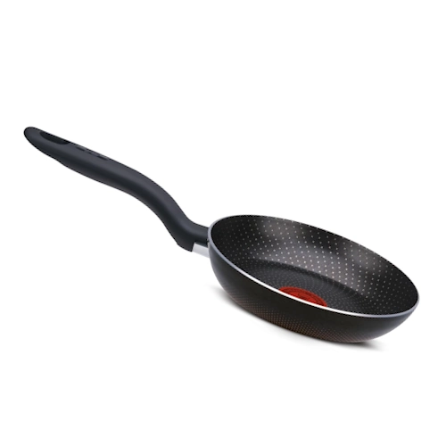
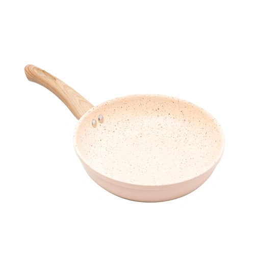
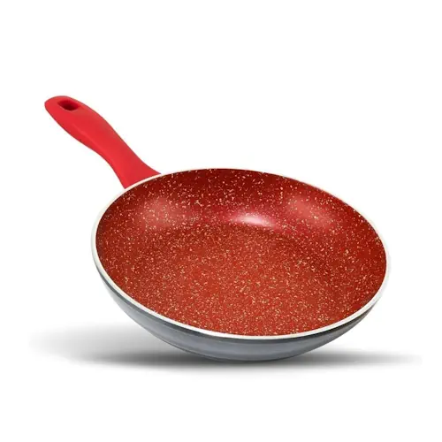
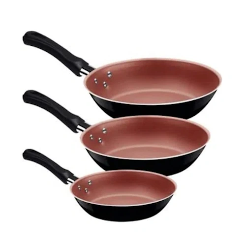
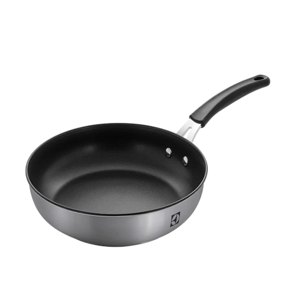

Quem nunca se frustrou ao ver a comida grudando na frigideira, mesmo usando óleo ou manteiga? Além disso, a limpeza depois pode ser um verdadeiro pesadelo. Para facilitar sua vida, reunimos as 5 melhores frigideiras antiaderentes de 2025, considerando custo-benefício, durabilidade e eficiência.
Cada uma dessas opções atende a diferentes necessidades, desde quem busca um modelo econômico até aqueles que desejam um produto premium. Se você quer praticidade, saúde e facilidade na cozinha, este guia foi feito para você. Confira nossa análise detalhada e descubra qual a melhor frigideira para seu dia a dia.

As melhores frigideiras antiaderentes combinam resistência e eficiência térmica. Modelos fabricados em alumínio fundido ou aço inox garantem excelente condução de calor e evitam deformações ao longo do tempo. O revestimento antiaderente pode ser de cerâmica, titânio ou PTFE livre de PFOA, proporcionando cozimento uniforme e facilitando a limpeza. Além disso, versões com fundo reforçado distribuem melhor o calor, prevenindo queimaduras localizadas nos alimentos. Cabos ergonômicos e resistentes ao calor garantem mais conforto e segurança no manuseio, tornando a experiência na cozinha ainda mais prática.
Para preservar o revestimento antiaderente, aguarde a frigideira esfriar antes de lavá-la. Utilize uma esponja macia com detergente neutro e evite produtos abrasivos que possam comprometer sua superfície. Se houver resíduos grudados, basta deixá-la de molho em água morna por alguns minutos antes da lavagem. Nunca utilize esponjas de aço ou utensílios metálicos para evitar riscos. Também é recomendável evitar a lava-louças, pois produtos químicos fortes e temperaturas elevadas podem acelerar o desgaste do revestimento. Após a lavagem, seque completamente antes de guardar, prevenindo o acúmulo de umidade e mofo. Com esses cuidados simples, sua frigideira manterá sua qualidade e eficiência por muito mais tempo.

A Rochedo Inova é a escolha ideal para quem busca uma frigideira acessível e de qualidade. Com revestimento antiaderente profissional reforçado, promete durar até cinco vezes mais que modelos comuns. Seu design resistente mantém a cor intacta, mesmo após contato direto com a chama do fogão. Além disso, sua construção robusta impede deformações ao longo do tempo, garantindo que você tenha um utensílio funcional por muito mais tempo.
Outro diferencial é a tecnologia Thermo-Sinal, que indica o momento exato para selar os alimentos, garantindo um cozimento mais saboroso. Com 2,4 mm de espessura, distribui o calor de forma uniforme e oferece manuseio seguro com seu cabo ergonômico. O fundo especial permite que a frigideira seja usada em diferentes tipos de fogões, tornando-a versátil para qualquer cozinha. Com excelente custo-benefício, é uma excelente opção para quem quer qualidade sem gastar muito. Preço médio: R$ 62.

Se você prefere um modelo com revestimento cerâmico, a Lyon Granilite é a escolha ideal. Compatível com fogões de indução, permite cozinhar sem óleo, tornando os preparos mais saudáveis. O revestimento cerâmico também reduz a emissão de substâncias tóxicas, comuns em algumas superfícies antiaderentes convencionais. Além disso, sua resistência ao calor prolonga a vida útil do produto, evitando rachaduras ou desgastes prematuros.
Seu material de alta qualidade melhora a condução de calor, otimizando o tempo de preparo. O cabo de bakelite proporciona conforto e segurança no manuseio, evitando aquecimentos excessivos. Com 24 cm de diâmetro, é ideal para diversas receitas, desde frituras até grelhados e refogados. O design moderno e elegante combina bem com qualquer cozinha, trazendo um toque sofisticado ao ambiente. Uma escolha excelente para quem busca praticidade, segurança e um toque de modernidade. Preço médio: R$ 97.

A Philco PPH240AFR se destaca pelo revestimento Redstone, que impede que os alimentos grudem e facilita a limpeza. Esse material inovador oferece alta resistência a riscos e arranhões, aumentando a durabilidade do utensílio. Além disso, a tecnologia utilizada no revestimento permite um cozimento uniforme, evitando pontos quentes que podem queimar os alimentos.
Possui 24 cm de diâmetro e capacidade de 1,7 L, permitindo preparar porções variadas. Outro diferencial é sua compatibilidade com todos os tipos de fogões, incluindo indução, elétrico e vitrocerâmico. O cabo em baquelite evita queimaduras, pois não aquece durante o uso. Com espessura de 4,5 mm, retém calor por mais tempo, mantendo os alimentos aquecidos mesmo após o desligamento do fogão. É uma frigideira robusta, eficiente e altamente funcional, ideal para quem busca um produto premium com excelente desempenho. Preço médio: R$ 132.

Se você quer um conjunto completo, a Tramontina Caribe é a opção perfeita. Composta por três frigideiras de alumínio com revestimento antiaderente Starflon Max, garante um cozimento uniforme e evita que os alimentos grudem. O alumínio proporciona excelente condução de calor, permitindo que os alimentos cozinhem rapidamente e sem desperdício de energia.
Os cabos antitérmicos em baquelite oferecem mais segurança, enquanto o revestimento externo em poliéster dá um toque sofisticado e protege contra riscos. Além disso, o conjunto é extremamente versátil, permitindo que você tenha frigideiras de diferentes tamanhos para preparar diversos tipos de receitas ao mesmo tempo. Ideal para quem deseja praticidade e eficiência na cozinha, sem abrir mão de um design elegante e funcional. Preço médio: R$ 94.

A Electrolux lidera nossa lista como a melhor frigideira antiaderente de 2025. Projetada para preparar carnes, legumes e grelhados com eficiência, reduz o uso de óleo graças ao seu revestimento de alta qualidade. Isso torna as refeições mais saudáveis, preservando o sabor natural dos alimentos.
Seu fundo triplo distribui o calor uniformemente, garantindo cozimento rápido e homogêneo. Feita em inox com acabamento escovado e cabo de silicone, combina durabilidade e segurança. Além disso, é compatível com todos os tipos de fogões e pode ser lavada na lava-louças, facilitando a manutenção. A alta resistência a choques térmicos evita deformações, garantindo longa vida útil. Uma escolha inteligente para quem busca um produto versátil, eficiente e que vale cada centavo investido. Preço médio: R$ 249.
A escolha da melhor frigideira antiaderente depende das suas necessidades. Se busca economia, a Rochedo Inova é excelente. Para um revestimento cerâmico, a Lyon Granilite é a melhor. Já a Philco PPH240AFR se destaca pelo Redstone, enquanto a Tramontina Caribe é ideal para quem quer um conjunto completo. Mas se deseja a melhor opção em Design Exclusivo, a Electrolux é imbatível.
Além disso, considerar fatores como durabilidade, facilidade de limpeza e compatibilidade com diferentes fogões pode fazer toda a diferença na sua escolha. Investir em uma boa frigideira antiaderente significa mais praticidade e qualidade nos seus preparos diários. Qual dessas frigideiras chamou mais sua atenção? Deixe seu comentário abaixo e compartilhe este artigo com quem também está em busca da melhor frigideira antiaderente!